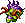
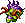
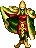
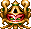

Simple, but incredibly fun. Skyblazer's cliché backstory has the teenaged warrior, Sky, avenging his father and rescuing some hot sorceress by killing the demon Ashura. There really anything more to say about the game itself...it's just generally very well-made and enjoyable for the basic platformer that it is. One thing I must say I appreciated, however, was that virtually every enemy strikes a comical death pose when hit and/or defeated, and it's amazing what a difference this makes. It somehow adds a lot to the adventurous feel.
In addition to punching and kicking, Sky will accumulate a variety of damaging spells (and one healing spell) as he defeats bosses. His ultimate spell, sadly coming in very late to the game, transforms him into a phoenix. There are also a few stages where he flies via artificial wings, and his punches in this form turn into energy bursts. He will automatically cling to most walls on contact, and can scurry along them pretty fast.

An old man named "Old Man" can be visited throughout the game for passwords, and will also appear to tell the storyline.
The Enemies
(Info on mouse-over)


 





THE BOSSES
Considered a boss battle, but really more of a cutscene. Ashura will defeat you automatically at the end of the first stage and fly off with the princess/sorceress.

Boss 2
This giant genie, constantly warping and shimmering, is impervious to damage until he retreats into his lamp and crawls to a new position.
Boss 3
This great armored ball-monster rolls endlessly along the inside walls of his small chamber, growing larger with each lap. It can only be damaged in the eye, which it will open only briefly to spit tiny fireballs whenever it rolls to the floor. Eventually it grows too large to move, and can only spin in place while you hide in the corner.

Boss 4
A demon face embedded in a wall of ice, this boss attempts to crush you against the edge of the chamber by rotating (which doesn't make ANY sort of sense, but you don't really notice these things, do you?), with a small opening to duck through at either the top, middle or bottom.
Boss 5
Found at the end of an irritating underwater maze, this boss consists of four mildly suggestive giant clams able to give birth to nasty prehistoric-looking fish. These fish start out tiny, but grow within seconds and follow you until destroyed. The clams themselves are attached to the inside of a small square chamber (with openings on each side) in the middle of a larger room where the current perpetually drags you and the fish in circles. There are never more than four fish at a time, but a new one is created whenever one is killed.
Boss 6
A well-executed blending of turtle, elephant and dragon, this boss alternately stomps, leaps and flies around its large arena, occasionally stopping to spit apples with little evil faces from its trunk/snake-turtle-head. These inexplicable demon apples are just ordinary projectiles, but they sure are weird.

Boss 7
This floating fox-spirit can split into three clones of itself, and attacks with miniature tornadoes. It rules the "palace of wind", an interesting stage consisting only of wind currents that you can walk on.
Boss 8
This chinese dragon repeatedly floats up from below and breathes fire as you hop around and around the outer wall of a rotating tower...which certainly doesn't sound like the easiest fight in the game, but that's exactly what this is. The dragon only ever faces left, and gives you ample time to hit his orb before you hop around back to dodge the flames.
Boss 9
Your true fight with Ashura takes place in the game's largest boss room, which is filled with platforms. He starts out with a shield, but your phoenix spell can easily destroy it. He attacks with fireballs and other magic while summoning purple gargoyles (see enemies).
Final Boss (Raglan)
The king of all demons is roughly two and a half screens tall, and rises higher out of his magma pit each time you damage him. Luckily, you can run across his arm (always sliding in and out to punch the opposite wall) to attack his face...provided you can dodge the sweeping laser generated by his green crystal.
When Raglan is destroyed, you transform into phoenix mode and fly off into the night sky.
AIM / Yahoo: Scythemantis
Email / MSN: bogleech@hotmail.com